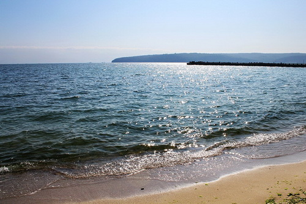

Важко уявити, що 8000 років тому Чорне море було гігантським прісноводним озером, схожим на Каспійське море. Коли потужний землетрус розколов сушу, утворилася протока Босфор у Туреччині. Вона з’єднала озеро із Середземним морем, й ось тоді, сюди ринули потоки морської, солоної води.
Цікаві факти про Чорне море

Чорне море вперше згадується в документах V століття до нашої ери. Ясон та аргонавти саме по Чорному морю йшли до Колхіди за золотим руном.
Давньогрецька назва моря — Понт Аксинський, що означає «Негостинне море». Море було назване так через труднощі з навігацією. Пізніше, після вдалого освоєння берегів грецькими колоністами, море стало називатися Понтом Евксинським («Гостинне море»).
Морський дракончик — найнебезпечніша риба для людини в Чорному морі. Колючки спинного плавника морського дракончика і кришок на зябрах містять сильну отруту. Ще деяку небезпеку становить скат-хвостокол, що має отруйний шип на хвості. Його ще називають рибою-котом.
На дні Чорного моря мешкають мідії, устриці й молюск-хижак Рапана, занесений кораблями з Далекого Сходу.
Особливістю Чорного моря є повна (за винятком деяких бактерій) відсутність життя на глибинах понад 150–200 м. Річ у тому, що глибинні шари Чорного моря насичені сірководнем. Сам сірководень у Чорному морі з’явився внаслідок загибелі всього живого в ньому через злиття із Середземним морем.
Єдина акула, яка живе в Чорному морі — Катран. Вона боїться людину й тому рідко з’являється біля берегів. Єдину небезпеку для людей представляють спинні плавники акули, оснащені великими отруйними шипами.
Є цікава версія, що море назвали Чорним через жахливі шторми, під час яких вода в морі темніє. Хоча, це буває дуже рідко.
У схемі течій Чорного моря виділяються два величезних замкнутих кругообіги з довжиною хвилі 350–400 км. На честь океанолога Миколи Кніповіча, який першим описав цю схему, її назвали «Окуляри Кніповича».
Чорне море омиває береги України, Румунії, Болгарії, Росії, Туреччини і Грузії.
Найбільша глибина — 2 210 м.
Площа Чорного моря — 422 000 км².
У Чорне море впадають приблизно 15 річок, серед яких Дунай і Дніпро.
У Чорному морі мешкає всього 2 500 видів тварин, для порівняння в Середземному — приблизно 9 000 видів.
Як правильно обрати ліжко?
При виборі ліжка в інтернет магазині Вам в першу чергу потрібно вибрати матеріал. Найбільшою популярністю користуються дерев'яні ліжка, виготовлені з вільхи, ясена чи дуба. Такі моделі чудово прикрасять Вашу спальню у квартирі чи приватному будинку. Для орендованих квартир, під здачу, більше підійде ліжко з металу, так як воно просто «не вбивається», а також має дуже демократичну ціну.
Для Вашої зручності ліжко може комплектуватись висувними ящиками або підйомним механізмом. Ящики можуть бути з одного боку ліжка або з двох. Також є моделі, з висувними ящиками спереду. Ліжка з підйомним механізмом, це відмінне рішення, для невеликих кімнат, вони дозволяють заощадити простір і мають велику нішу для зберігання постільної білизни. Всі дерев'яні ліжка комплектуються буковими ламелями. Спальне місце з ламельною основою може витримувати навантаження до 150 кг на одне спальне місце. Відстань між ламелями, у своїй має бути 2,5-3 див.
Кожне ліжко може бути забарвлене у різні кольори: чорні, білі, сірі, венге, у кольорі горіх. Завдяки цьому ліжко можна підібрати під будь-який інтер'єр.
Оформлення вітальні. Які м'які меблі краще вибрати?

Вітальня – це основна кімната у кожному будинку. Саме вона служить для прийому гостей, проведення часу всією сім'єю та просто для відпочинку у приємній теплій атмосфері. Оформляючи свій будинок та вітальню зокрема, всі намагаються зробити її максимально зручною, комфортною та красивою. Основним та центральним елементом оформлення вітальні, як і будь-якої іншої кімнати, є м'які меблі.
Будь-які меблі для вітальні повинні бути не тільки стильними і красивими, але і функціональними. На таких меблів має бути зручно та приємно відпочивати та приймати гостей. Однак сьогодні існує величезна різноманітність найрізноманітніших м'яких меблів для вітальні, яка підходить для кімнат різних розмірів і форм. На чому варто зупинити свій вибір? Як краще оформити свою вітальню, щоб вам було комфортно, а гості хотіли приходити до вас знову та знову?
На сайті інтернет магазину Кровато представлено велику різноманітність м'яких меблів для вітальні, серед яких кожен зможе вибрати для себе найбільш вдалий варіант. У нас ви знайдете:
Підбір м'яких меблів для вітальні – це заняття непросте. Однак при виборі та покупці меблів для своєї вітальні пам'ятайте, що якісні м'які меблі повинні бути не тільки красивими, але й зручними для вас і всіх мешканців вашого будинку.